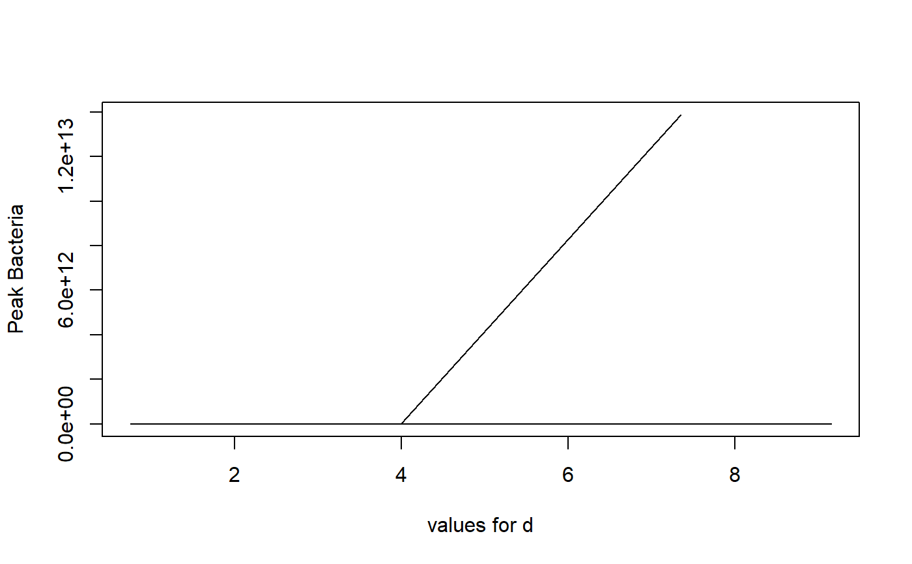

R/simulate_usanalysis.R
simulate_usanalysis.RdThis function performs uncertainty and sensitivity analysis using the simple, continuous-time basic bacteria model.
simulate_usanalysis(
Bmin = 100,
Bmax = 200,
Imin = 1,
Imax = 2,
Bmaxmin = 1e+05,
Bmaxmax = 2e+05,
dBmin = 0.5,
dBmax = 1,
kmin = 1e-04,
kmax = 2e-04,
rmin = 1e-04,
rmax = 2e-04,
dImin = 1,
dImax = 2,
gmean = 2,
gvar = 0.5,
samples = 10,
rngseed = 100,
tstart = 0,
tfinal = 300,
dt = 0.5
): lower bound for initial bacteria numbers : numeric
: upper bound for initial bacteria numbers : numeric
: lower bound for initial immune response : numeric
: upper bound for initial immune response : numeric
: lower bound for maximum bacteria load : numeric
: upper bound for maximum bacteria load : numeric
: lower bound for bacteria death rate : numeric
: upper bound for bacteria death rate : numeric
: lower bound for immune response kill rate : numeric
: upper bound for immune response kill rate : numeric
: lower bound for immune response growth rate : numeric
: upper bound for immune response growth rate : numeric
: lower bound for immune response death rate : numeric
: upper bound for immune response death rate : numeric
: mean for bacteria growth rate : numeric
: variance for bacteria growth rate : numeric
: number of LHS samples to run : numeric
: seed for random number generator : numeric
: Start time of simulation : numeric
: Final time of simulation : numeric
: times for which result is returned : numeric
The function returns the output as a list. The list element 'dat' contains a data frame. The simulation returns for each parameter sample the peak and final value for B and I. Also returned are all parameter values as individual columns and an indicator stating if steady state was reached. A final variable 'steady' is returned for each simulation. It is TRUE if the simulation did reach steady state, otherwise FALSE.
A simple 2 compartment ODE model (the simple bacteria model introduced in the app of that name) is simulated for different parameter values. The user provides ranges for the initial conditions and parameter values and the number of samples. The function does Latin Hypercube Sampling (LHS) of the parameters and runs the basic bacteria ODE model for each sample. Distribution for all parameters is assumed to be uniform between the min and max values. The only exception is the bacteria growth parameter, which is assumed to be gamma distributed with the specified mean and variance. This code is part of the DSAIRM R package. For additional model details, see the corresponding app in the DSAIRM package.
This function does not perform any error checking. So if you try to do something nonsensical (e.g. specify negative parameter values or fractions > 1), the code will likely abort with an error message.
See the Shiny app documentation corresponding to this simulator function for more details on this model.
# To run the simulation with default parameters just call the function:
if (FALSE) result <- simulate_usanalysis()
# To choose parameter values other than the standard one, specify them, like such:
result <- simulate_usanalysis(dImin = 0.1, dImax = 10, samples = 5, tfinal = 50)
# You should then use the simulation result returned from the function, like this:
plot(result$dat[,"dI"],result$dat[,"Bpeak"],xlab='values for d',ylab='Peak Bacteria',type='l')
